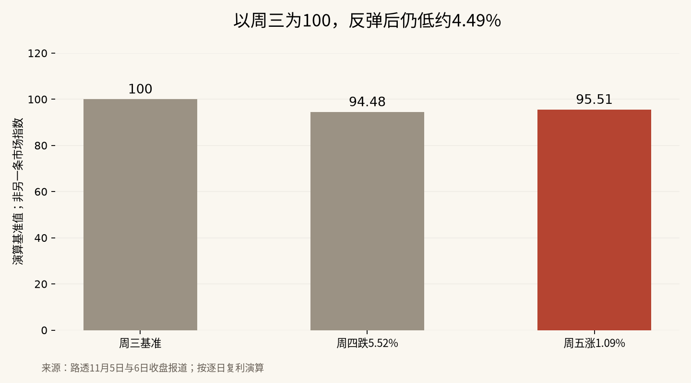

纳指反弹1.09%，为什么还远远没有修复那场暴跌
把周四和周五连乘，纳指仍比周三收盘低约4.49%；AI建设继续，不代表旧估值可以原样回来。
反弹修复了多少损失，要把两天的收益连起来算，不能拿涨幅直接抵跌幅。11月6日纳指收涨约1.09%，这是买盘回来的证据；连同前一天5.52%的跌幅计算，两天仍累计下跌约4.49%。把它叫作止跌尝试合适，把它叫作危机结束还太早。
这场争论里有两件很容易混在一起的事：企业会不会继续使用AI，以及投资者愿意为那些未来收入付多少钱。前者仍有需求支撑，后者已经受到项目审批、融资成本和盈利兑现速度的共同挤压。技术没有消失，股价照样可以重新找位置。
资金刻度对照：反弹后仍未回到100
| 以周三收盘为100 | 当日变化 | 收盘后的资金刻度 |
|---|---|---|
| 11月5日周四 | −5.52% | 94.48 |
| 11月6日周五 | +1.09% | 95.51 |
| 两日合计 | 约−4.49% | 仍未回到100 |

这份复利对照使用公开收盘涨跌幅做演算，不是另一条市场指数。计算式是0.9448×1.0109−1。周四跌完之后，要从94.48回到100，需要上涨约5.84%，而不是5.52%。周五的反弹只收复了周四损失的大约19%。
我把两天放在同一个起点后，感受就变了。屏幕上很亮的一片绿色，放回整段行情里只是一个不大的缺口修补。尤其是在大跌后的第一天，单日涨幅更容易让人低估自己距离原来位置还有多远。
路透对周五收盘的报道显示，纳指上涨约1.1%，半导体指数反弹约4.2%；英伟达上涨约2.8%，AMD上涨约11%。与此同时，道指下跌约0.46%。这些变化说明资金首先回到跌得最重的科技硬件，而不是所有资产同时恢复了信心。
抛售的是建设速度，也是在压低远期现金流的价格
数据中心从拿到电力、取得许可，到设备安装、客户付费，中间有一段很长的距离。只要其中一环变慢，收入就可能后移；厂房、设备和融资的账单却未必跟着后移。
市场担心选举后的政策变化拖慢建设，真正影响估值的是这段时间差。项目最终完成，与项目按照原来的进度完成，对投资者不是一回事。合同足够牢固的企业可能只是晚收钱，依赖不断融资的企业则可能先遇到现金压力。
还要加上一层利率。未来赚到的钱折算成今天的价值，需要扣掉等待期间的资金成本。资金成本越高，同样一笔远期收入今天就越不值钱。周五就业数据偏强，使市场继续讨论加息，这与科技股的反弹同时发生，不能只留下其中一个方向的消息。
⚠️ 新一届国会或地方政府究竟会改变哪些项目、改变多少进度，仍需看实际政策和项目文件；股市当日的担忧不等于已经发生的全面停建。
我不打算给每只芯片股套同一种剧本。已经拿到客户付款、能够自行融资的企业，与靠乐观融资条件维持扩张的企业，承受同一次建设放缓时，结果可能差得很远。
多头最有力的反驳，是需求并没有被取消
Dan Ives在当天的X帖子中认为，AI建设不会因为选举结果消失，市场把科技股卖得像建设要彻底停止，属于反应过度。这是多头值得认真讨论的论据，而不是一句“跌多了就会涨”。
企业已经在使用AI，也已经把部分工作流程搬进模型和代理系统。只要这些用途能持续产生收入或节约成本，算力需求就不会仅仅因为股票下跌而归零。路透引用的市场人士同样认为，科技股回调可能给长期投资者带来机会。
但这个论据只能支持“需求仍然存在”，不能自动证明“每家公司都便宜”。从需求增长到股东回报，中间还有售价、毛利、折旧、资本开支和融资摊薄。行业增长的果实可能更多流向客户，也可能被设备更新和价格竞争消耗掉。
当天Ramp公开的数据尤其适合作为提醒：截至10月23日的比较周，样本企业的token用量增长37.1%，支出增长8.9%。这不是全行业收入统计，却足够说明使用量与收入并不需要等比例增长。把调用次数的繁荣直接换成供应商利润，少算了价格这一环。
更多行业参与，修复才更有持续性
一次修复如果只靠几个跌幅最大的名字，仍可能是仓位回补；如果企业盈利预期稳定、更多行业参与、融资条件没有进一步恶化，修复才更有持续性。价格变化之外，订单能否变成现金、建设延期会不会变成取消，同样重要。
这不要求投资者猜出准确的最低点。更实际的做法是分清持仓靠什么赚钱：靠已经形成的经营现金流，还是靠未来有人愿意给更高估值。两种逻辑在上涨时看起来相似，调整时才会显出差别。
杠杆会把这种差别进一步放大。日内倍数产品追求每天的目标收益，并不保证一段时间的收益恰好是指数的固定倍数。持续震荡时，逐日复利本身就可能侵蚀资金。把长期看好AI直接变成高倍数抄底，承担的是另一个问题。
价格便宜，需要一个没有被调低的分母
股票估值常用市盈率，也就是股价与每股盈利的比值。问题在于，市场谈论的往往是未来盈利：股价今天跌了，预测盈利还没有更新，比值自然显得便宜。等分析师把建设延迟、客户采购节奏和利润率重新放进预测，那个分母也可能下调。
这种时差不意味着企业一定会变差，而是提醒人不要把旧预测当作已经拿到手的钱。对周期性较强的设备供应商，客户集中采购和下一轮供给扩张还会让盈利出现波动。某个时点的低倍数，既可能是机会，也可能在反映市场对利润高点的怀疑。
仓位管理同样要看自己的现金需求。如果持有人必须在较短时间内用钱，就算长期方向正确，也未必承受得住中间的下跌。反过来，没有短期兑付压力的人，也不必因为一次反弹就急着把所有判断做完。期限不同，能承受的路径不同。
这比争论是不是互联网泡沫重演更有操作意义。历史类比可以帮助提出问题，却不能代替对今天收入、成本和融资安排的核算。同一轮技术扩散之中，客户、供应商与股东获得的好处可能完全不成比例。
这轮行情目前更像建设与估值之间的一次重新谈价。机会在于需求仍有韧性，风险在于原先对速度、利润和融资的假设同时偏乐观。若订单兑现和盈利预期稳住，反弹才可能长成修复；若项目延期扩散、现金回收继续后移，即使AI用途越来越多，科技股也未必回到原来的价格。
免责声明：本文讨论公开市场信息与收益计算，不构成任何证券的买卖建议。历史涨跌和情景演算不代表未来回报。
X 上怎么看
结论 · 分歧：AI需求韧性与估值、利率压力同时存在
▲ 看多2 位
▼ 看空1 位
观点为 X 用户当日公开帖子的中文摘要，忠于原文但有删减；标「未核实」的为预测、个人推测或单一来源说法。立场为人工判断。
数据来源
- 市场收盘数字以路透报道为依据；纳指末位小数存在不同媒体舍入口径，正文用百分比。两日累计跌幅及恢复比例是明确标注的复利演算。Ramp仅代表其样本，不能外推全行业收入。